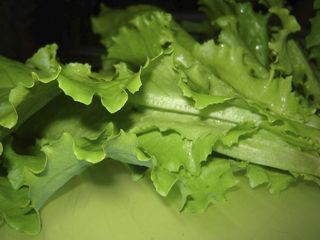
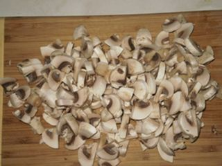
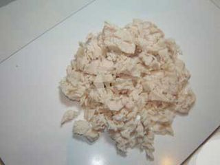
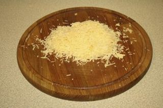
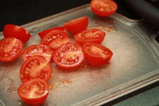
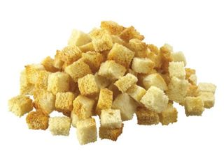
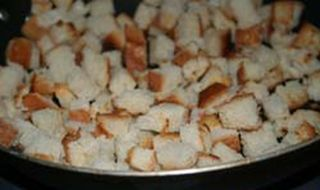
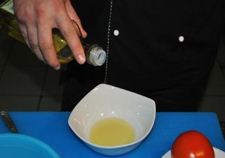
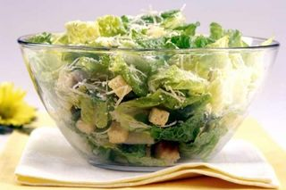

Шаг 1: подготовим салат «Роман».

Промоем листья салата в проточной воде, обсушим кухонным полотенцем и положим на тарелку в холодильник. Охлажденные листья порвем руками на крупные куски.
Шаг 2: подготовим шампиньоны.

Грибы отварим в кастрюле с подсоленной водой в течение 10 минут. Достанем шампиньоны шумовкой и остудим. Затем нарежем грибы ножом на разделочной доске пластинками. Также вы можете порезать только большие грибы, а маленькие оставить целыми, это украсит готовый салат.
Шаг 3: подготовим цыпленка.

Отварим филе цыпленка в подсоленной воде до готовности около 25 минут. Вынимаем филе из кастрюли и даем остыть. Затем порежем ножом на разделочной доске на маленькие кусочки.
Шаг 4: подготовим сыр.

Сыр натрем на разделочную доску на мелкой терке.
Шаг 5: подготовим помидоры.

Помидоры помоем и нарежем ножом на разделочной доске на половинки.
Шаг 6: подготовим белый хлеб.

С белого хлеба срежем корочки и нарежем ножом на разделочной доске кубиками 1x1 см. Разогреваем духовку до 180°С, выкладываем кубики хлеба на противень, и ставим на 10 минут в духовку. Периодически открываем духовку и переворачиваем кубики.
Шаг 7: подготовим сухарики с чесноком.

2 зубчика чеснока натрем на терке или раздавим в чеснокодавке и переложим в тарелку. Ложкой смешаем с солью, добавим 1 ст. ложку оливкового масла, перемешаем. Выльем смесь на сковородку, разогреем на небольшом огне и добавим хлеб из духовки. Перемешаем и подержим на огне в течение 2х минут.
Шаг 8: подготовим соус.

Подготовим ингредиенты для соуса. Наливаем в кастрюлю воду и доводим до кипения. Опускаем яйцо ровно на одну минуту. Чеснок натрем на мелкой терке. Сыр также натрем на мелкой терке. Готовим соус. В миске смешаем ложкой оливковое масло, горчицу, чеснок. Затем выжимаем в смесь половину лимона и разбиваем туда яйцо (чуть сварившийся белок также добавляем в соус). Взбиваем полученный соус в блендере 1 минуту и добавляем натертый сыр.
Шаг 9: готовим салат «Цезарь» с цыпленком и грибами.

Натрем зубчиком чеснока салатник. Выложим на дно листья салата, добавим грибы, кусочки цыпленка и сухарики. Заправим салат подготовленным соусом и перемешаем.